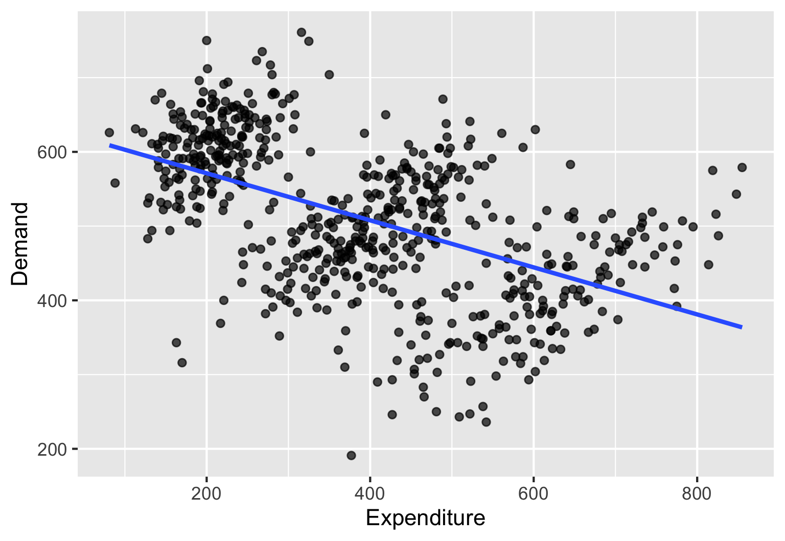
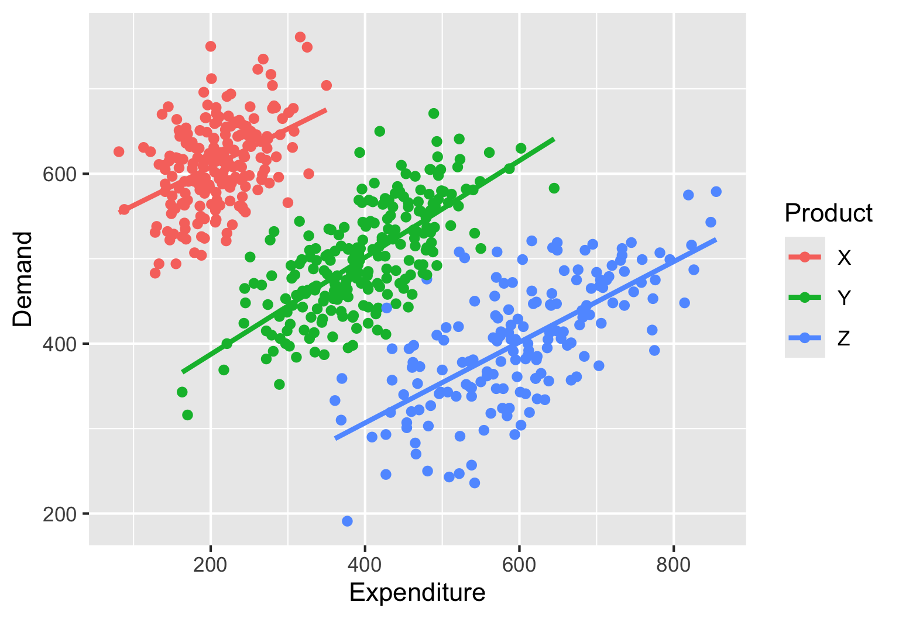

store_sales |>
head()16 Adjustment
At a high level, we use simple models for one of two purposes:
- reveal differences across groups
- One model might tell us that the average weekly sales of product A are greater than that of product B.
- Another model might tell us that cars with front wheel drive have higher fuel efficiency than cars with rear, or four-wheel drive.
- reveal relationships between variables.
- A model might tell us that sales of a company are positively related to advertising expenditure.
- A model might show us that the more time students spend on social media, the lower their GPA is.
Can models mislead? Can they ask us to believe something that is really not true?
This chapter considers these important questions and sensitizes you to the important concept of adjustment that takes us beyond just crunching the numbers, and into thinking critically about them.
16.1 Apples to apples comparisons
We first look at several concrete examples that teach us to be cautious when making comparisons.
16.1.1 Who is the best store manager?
A company has many retail stores across the country. The VP of sales has announced that the store manager of the store with the highest sales will get a big bonus. @tab-store-sales shows the sales of the first six stores in the dataset.
| store_id | store_manager_name | store_sales |
|---|---|---|
| S001 | Ava Patel | 1879989 |
| S002 | Liam Kim | 2258457 |
| S003 | Mia Garcia | 2518618 |
| S004 | Noah Nguyen | 3842134 |
| S005 | Emma Johnson | 3176279 |
| S006 | Ethan Singh | 2629851 |
Since the store manager of the store with the highest sales will get a big bonus, we look at the sales of all stores and find that the top six stores by sales are as shown in @tab-top-sales.
store_sales |>
arrange(-store_sales) |>
head() | store_id | store_manager_name | store_sales |
|---|---|---|
| S030 | Sebastian Perez | 4635738 |
| S016 | James Gonzalez | 4501858 |
| S004 | Noah Nguyen | 3842134 |
| S033 | Zoey Allen | 3530267 |
| S036 | Samuel King | 3424019 |
| S014 | Elijah Hernandez | 3278952 |
Should Sebastian Perez get the award?
Important
If the stores differ only in their floor area and are otherwise quite similar, we will get a better picture by adjusting the sales for store size. So instead of comparing sales volume, we could compare sales volume per square foot.
If we think there are other important factors playing a role, we should adjust for them as well.
The data frame store_sales_full, has store_floor_area. as an additional variable. See @tab-store-sales-full.
store_sales_full |>
head()| store_id | store_manager_name | store_sales | store_floor_area |
|---|---|---|---|
| S001 | Ava Patel | 1879989 | 4400 |
| S002 | Liam Kim | 2258457 | 4800 |
| S003 | Mia Garcia | 2518618 | 6600 |
| S004 | Noah Nguyen | 3842134 | 5100 |
| S005 | Emma Johnson | 3176279 | 5100 |
| S006 | Ethan Singh | 2629851 | 6700 |
Let us compute the sales per square foot for each store and then look at the top six stores by this metric. See @tab-top-sales-sqft.
store_sales_full |>
mutate(sales_per_sqft = store_sales/store_floor_area) |>
select(-store_id) |>
arrange(-sales_per_sqft) |>
head() | store_manager_name | store_sales | store_floor_area | sales_per_sqft |
|---|---|---|---|
| Noah Nguyen | 3842134 | 5100 | 753 |
| Sebastian Perez | 4635738 | 6300 | 736 |
| James Gonzalez | 4501858 | 6800 | 662 |
| Elijah Hernandez | 3278952 | 5100 | 643 |
| Emma Johnson | 3176279 | 5100 | 623 |
| Samuel King | 3424019 | 5700 | 601 |
@tab-top-sales-sqft shows that Noah Nguyen has the highest sales per square foot. So, if we adjust for store size, Noah Nguyen would get the award instead of Sebastian Perez. Several of the stores in the top six from earlier (@tab-top-sales) do not figure in this list at all.
16.1.2 Bank branch loan default comparisons
A bank compares loan default rates across branches.
Branch A: 8% default rate Branch B: 3% default rate
Conclusion: Branch A has weaker loan officers.
Important
Before jumping to conclusions based only on the default rate, We might need to Adjust for other variables.
Tip
Do you see a common theme emerging from these comparison situations showing the need for adjustment?
When we compare different numbers that seem to show show superiority or inferiority, we should always wonder if the baseline or potential is different for the different numbers we are comparing. We can then take this into account (adjust!) in our comparison.
Based on the examples, you should not assume that comparisons are never valid. Indeed, many comparisons might be valid. We are only pointing out that we should examine this facet carefully before tacitly accepting the story that some numbers tell us.
16.1.3 Comparing students’ GPAs
Daniel Kaplan, in “Lessons in statistics” presents a nice example of the need for adjustment that students can relate to. We use the same idea here.
At the end of their freshman semester, Susan has a GPA of 3.8, compared to Nolan’s 3.45. The cutoff for a certain scholarship is 3.5. Susan qualifies to apply, Nolan does not. Assuming that the scholarship provide used the GPAs to identify better students, Under what conditions can we consider this comparison to be fair, and under what conditions would it be unfair? If the comparison is unfair, what can we do to perform a fair comparison?
The suggested answer above tells us that comparing raw GPAs could be misleading and that we somehow need to temper the GPAs or adjust them to account for their professor’s grading difficulty. That is, we should compute an adjusted GPA for Susan and Nolan and then compare them. Alternatively, the scholarship cutoff should be based on an adjusted GPA rather than the raw one.
The dataset gpa_data_basic has illustrative data for five students on four courses each.
gpa_data_basicBased on the above data, we can compute the GPA for the students and list them in descending order. See @tab-gpa-basic.
gpa_data_basic |>
summarize(gpa = mean(grade_points), .by = student_id) |>
arrange(-gpa)| student_id | gpa |
|---|---|
| S01 | 3.58 |
| S02 | 3.42 |
| S03 | 3.00 |
| S05 | 3.00 |
| S04 | 2.50 |
The data frame gpa_data_adjusted shows the student data with an additional variable showing the corresponding professor’s grading toughness in the range 0.75 (very tough grader) to 1.25 (very easy grader. See @tab-grade-data-adjusted.
gpa_data_adjustedThe variable adjusted_points shows the grade points for each student for each course adjusted with the professor’s grading toughness (raw grade point divided by grading toughness).
Using this data, we can now compute the adjusted gpa. See @tab-gpa-adjusted
gpa_data_adjusted |>
summarize(adj_gpa = mean(adjusted_points), .by = student_id) |>
arrange(-adj_gpa)| student_id | adj_gpa |
|---|---|
| S03 | 3.77 |
| S02 | 3.42 |
| S04 | 3.15 |
| S05 | 2.95 |
| S01 | 2.93 |
When comparing @tab-gpa-basic and @tab-gpa-adjusted, we see that the order of students has changed. Student S01, who had the highest raw GPA, has the lowest adjusted GPA. Student S03, who had a raw GPA of 3.00, has the highest adjusted GPA of 3.77.
Important
Instead of comparing GPAs directly, we need to adjust them for grading toughness of professors to get a more accurate picture of the students’ performance.
16.1.4 Gender pay gap?
An employee sues a company for pay discrimination based on the following data:
Average male salary: $110,000 Average female salary: $95,000
It could be true that the company is systematically paying female employees lower salaries. Or could it be the case that the company is not discriminating against female employees. Could it even be the case that the company is systematically paying its male employees lower salaries?
What should we examine before concluding? What important variables might we be missing?
What if:
the company had mostly male employees for a long time and is trying to bridge this gap and has been recruiting more female employees in recent years, but more of these recruits have been at lower levels – resulting in lower average salaries for female employees?
the job roles differ significantly between male and female employees? For example, the company may have many people who operate heavy equipment and are paid very high salaries because of the risk involved. All of these operators are male and this could raise the average male pay.
Important
It could turn out that when we adjust for the right variables, the difference vanishes.
It could even be that when we compare male and female workers performing similar tasks or at similar job levels (adjust for the variables job level and job type) the data could even possibly reveal that the company is actually underpaying male employees! … despite the overall average seemingly showing the opposite.
The only way to get to the truth is to adjust for the right variables and then compare.
Important
We spoke earlier about baseline potential being different for the numbers being compared. Such differences arise from systematic differences between the groups being compared.
In the case of the store managers, we initially attributed the difference in sales across stores solely to how effectively the stores were being managed. But that might not be the only difference. Stores might differ in other ways that the initial analysis has not considered – for example, store size.
In the bank loan default scenario, if we attributed the differences in default rates solely to the efficiency of the loan officers then we assume that the branches are otherwise the same. When we see how there might be other differences, then we get a more nuanced picture.
In the GPA example, we initially attributed the GPA differences solely to the quality of the students. However, when we take into account other important differences – like the differences in toUghness of grading across professors, a different picture emerges.
In the pay discrimination example, we initially attributed the pay difference solely to gender, ignoring other relevant systematic differences between the two groups.
16.2 We might need adjustment to properly understand relationships
The previous section showed the importance of adjustment when comparing summaries across groups. In this section, we will see that adjustment is also important when we are trying to understand relationships between variables.
16.2.1 Simpson’s paradox
The data frame demand_expenditure_simpson has data on demand and expenditure for a company. We can build a model to understand the relationship between demand and expenditure.
demand_expenditure_simpson |>
model_train(Demand ~ Expenditure) |>
coef()(Intercept) Expenditure
634.581 -0.317 The output shows, counterintuitively, that the coefficient of Expenditure is negative. See Equation 16.1. The model suggests that increasing expenditure by one unit decreases demand by 0.32 units. \[ \widehat{Demand} = 634.6 - 0.32 \times Expenditure \tag{16.1}\]
Figure 16.1 confirms this.
demand_expenditure_simpson |>
point_plot(Demand ~ Expenditure,
annot = "model",
interval = "none")
While the overall relationship is puzzling, we can see that the plot itself shows three distinct clouds of points. This might lead us to wonder if there is a variable we might be missing.
The data frame demand_expenditure_simpson has a variable Product. Perhaps that has something to do with this counter-intuitive finding.
Let us adjust for product by including it in the model.
demand_expenditure_simpson |>
model_train(Demand ~ Expenditure + Product) |>
coef()(Intercept) Expenditure ProductY ProductZ
505.489 0.509 -207.555 -409.010 We see now that the coefficient of Expenditure is positive, showing that higher expenditure is associated with higher demand. See the model function in Equation 16.2.
\[ \widehat{Demand} = 505.5 + 0.51 \times Expenditure \begin{cases} +\,0 & \text{if } \text{Product} = \text{"ProductX"} \\ -\,207.6 & \text{if } \text{Product} = \text{"ProductY"} \\ -\,409 & \text{if } \text{Product} = \text{"ProductZ"} \end{cases} \tag{16.2}\]
Plotting three separate regression lines for the three products confirms this finding. See Figure 16.2.

16.3 A word of caution about our examples
We showed some dramatic examples to illustrate the importance of adjustment. We do not mean to suggest that all comparisons of averages or of relationships are misleading or will have sweeping effects when we adjust for other variables.
However, we do want to stress that we should always be cautious and ask ourselves if there are other variables that we need to adjust for before accepting the story that the numbers are telling us.